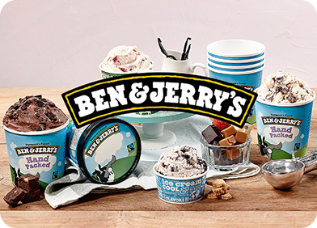

KR
Ice craem

벤 앤 제리스는 우리의 사업과 관련된 모든 이들을 위해 연계 번영을 만들어내는 것을 목표로 세 가지 사명을 수행하고 있으며,
여기에는 공급 업체, 직원, 농가, 가맹점, 고객, 이웃들이 모두 해당됩니다.

미션
우리의 제품 미션은 우리가 그 자체로
환상적인 아이스크림을 만들도록 이끕니다.
경제
우리의 경제 사명은 지속 가능한 재무 성장을 위해
회사를 관리할 것을 요구합니다.
사회
우리의 사회적 사명은 우리가 세상을 더 나은 곳으로
만들기 위해 혁신적인 방법으로 우리 회사를 사용하도록
강요합니다.
사회 전반을 이끌어가는 진보적 가치